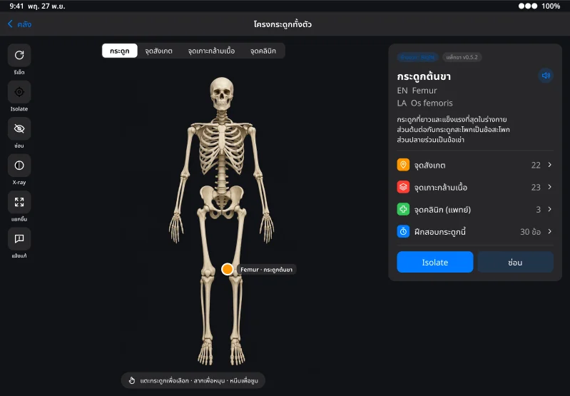

04. UI design

1. ฐานของ UI
- Flutter Cupertino widgets ทั้งหมด เพราะแอปหลักอยู่บน iPad และต้องการให้รู้สึกเหมือนแอปของระบบ หน้าจอทุกหน้าประกอบจาก component ที่ตั้งชื่อตาม widget ของ Flutter (เช่น
CupertinoListTile,CupertinoSlidingSegmentedControl) เพื่อให้นักพัฒนาแปลงเป็นโค้ดได้ตรงตัว - ไม่ใช้ Apple iOS 26 UI kit เพราะ Liquid Glass ยังไม่มีใน Flutter Cupertino และ kit มีเงื่อนไข EULA ส่วนที่ต้องเป็นพื้นเบลอ (แผงบน viewport) ใช้
BackdropFilter - Widget ที่สร้างเอง มีเฉพาะที่ Cupertino ไม่มี: ProgressBar, ProgressRing, NameTriple, LandmarkPin, ViewportToolButton, StatusBadge
2. สี
ตัวแปรสีอยู่ใน collection CupertinoColors มีโหมด Light และ Dark ค่าตรงกับ CupertinoColors ของ Flutter
| กลุ่ม | ตัวแปร | ใช้ทำอะไร | Flutter |
|---|---|---|---|
| สีหลัก | brand/primary = systemBlue #007AFF / #0A84FF |
ปุ่ม ลิงก์ แท็บที่เลือก | CupertinoColors.systemBlue (Jedt เลือก 27 พ.ย. 2026 ให้เหมือน iOS ไม่ใช้ม่วง) |
| สีระบบ | system/green, red, orange, yellow, teal, pink, purple, grey |
ไอคอน ป้าย สถานะ | CupertinoColors.system* |
| ข้อความ | label/label, secondaryLabel, tertiaryLabel, onPrimary |
ข้อความทุกระดับ | CupertinoColors.label ฯลฯ |
| ข้อความสีที่อ่านง่าย | text/success, warning, danger, info |
ป้ายสถานะและข้อความสีขนาดเล็ก | CupertinoDynamicColor (เพิ่มหลังตรวจ contrast) |
| พื้น | background/*, fill/*, separator, bar |
พื้นหลัง เซลล์ เส้นคั่น แถบ | CupertinoColors.systemGroupedBackground ฯลฯ |
| สีอ่อน | tint/* (ฝังความโปร่งไว้ในค่า 15% / 26%) |
ปุ่ม tinted พื้นป้าย แถวที่เลือก | color.withValues(alpha: …) |
| Viewport | viewport/background #111217, surface, bone |
พื้น 3D มืดเสมอ แผงบน viewport | ค่าคงที่ |
| กายวิภาค | anatomy/origin แดง, insertion น้ำเงิน, landmark ส้ม, clinical เขียว |
สีหมุดและแผนที่จุดเกาะ | ค่าคงที่ใน theme extension |
| เลนส์ | lens/medicine, dentistry, nursing, pharmacy |
สีประจำเลนส์ | theme extension |
3. ตัวอักษร
ฟอนต์ Noto Sans Thai UI ทุกข้อความ (SF Pro ไม่มีอักษรไทย) ขนาดตาม Apple text styles แต่เพิ่มระยะบรรทัดให้พอสำหรับสระบนล่างของไทย
| Style | ขนาด | ระยะบรรทัด | ใช้ที่ |
|---|---|---|---|
| iOS/Large Title | 34 | 1.29 | หัวหน้าแท็บ |
| iOS/Title 1–3 | 28 / 22 / 20 | 1.36 – 1.40 | หัวข้อในแผง |
| iOS/Headline, Body | 17 | 1.41 | เนื้อหาหลัก ชื่อในรายการ |
| iOS/Callout, Subheadline | 16 / 15 | 1.38 / 1.40 | คำอธิบาย |
| iOS/Footnote, Caption 1–2 | 13 / 12 / 11 | 1.27 – 1.38 | ข้อความรอง หัว section |
| Cupertino/tabLabel, navTitle | 10 / 17 | 1.20 / 1.29 | แท็บ แถบนำทาง |
| Web/Display, H1, H2, Body | 48 / 36 / 26 / 18 | 1.25 – 1.67 | หน้าเว็บ |
4. ระยะ มุมโค้ง และ layout
- ระยะ
space/4, 8, 12, 16, 20, 24, 32, 48มุมโค้งradius/6, 8, 10, 12, 14, 20 - iPad 1180 × 820 แนวนอน: แผงรายการซ้ายกว้าง 380–500 viewport หรือรายละเอียดอยู่ขวา (split view)
- Viewer: แถบเครื่องมือซ้ายประมาณ 64 pt, segmented control ด้านบนกลาง, แผงข้อมูลลอยด้านขวากว้างประมาณ 360 pt, คำแนะนำการใช้นิ้วอยู่ล่าง
- มือถือ 393 × 852: ขอบข้าง 16 pt, tab bar 4 แท็บ
- เว็บ 1440: ขอบข้าง 64 px, หน้าอ่านแบ่งภาพ 520 px กับเนื้อหา
5. Component และ Flutter widget
| Figma component | Flutter | หมายเหตุ |
|---|---|---|
| CupertinoTabBar / item | CupertinoTabScaffold + CupertinoTabBar |
iPad 5 แท็บ มือถือ 4 แท็บ |
| CupertinoNavigationBar | CupertinoNavigationBar |
ช่องซ้ายขวายืดเท่ากัน ชื่อจึงอยู่กลางทั้งบน iPad และมือถือ |
| CupertinoSliverNavigationBar | CupertinoSliverNavigationBar |
หัวข้อใหญ่ |
| CupertinoButton (filled / tinted / plain × large / medium / small) | CupertinoButton.filled, .tinted, CupertinoButton |
minSize 44 ทุกขนาด |
| CupertinoListTile + section | CupertinoListSection.insetGrouped + CupertinoListTile |
trailing: chevron / ค่า / switch / check |
| CupertinoSlidingSegmentedControl | CupertinoSlidingSegmentedControl |
บน viewport ใช้พื้น viewport/surface |
| CupertinoSwitch, Checkbox, Slider | ตรงชื่อ | |
| CupertinoSearchTextField, TextField | ตรงชื่อ | |
| CupertinoAlertDialog, ActionSheet | showCupertinoDialog, showCupertinoModalPopup |
|
| Sheet แจ้งแก้ | showCupertinoSheet |
Flutter 3.29 ขึ้นไป |
| NameTriple | widget ของเรา | ไทย / EN / LA + ปุ่มเสียง |
| LandmarkPin | widget ของเรา | ชนิด landmark, origin, insertion, clinical, question, correct, wrong × เลือก/ไม่เลือก วางด้วยพิกัดที่ project จาก flutter_scene |
| ViewportToolButton | CupertinoButton + ไอคอน |
ใช้ใน viewport |
| StatusBadge | widget ของเรา | tone: neutral, info, success, warning, danger, brand |
| ProgressBar, ProgressRing | widget ของเรา / CustomPaint |
6. แนวทางเขียนข้อความ (UX copy)
- ภาษาไทยสุภาพแต่สั้น ใช้คำกริยานำปุ่ม เช่น "เริ่มทบทวน" "ดูแบบ 3D" "แจ้งแก้"
- ชื่อกายวิภาค: ไทยก่อน ตามด้วย EN และ LA ตามการตั้งค่า ไม่แปลศัพท์ที่นักศึกษาใช้ทับศัพท์อยู่แล้ว (เช่น "โทรแคนเตอร์ใหญ่")
- เนื้อหาคลินิกทุกจุดมีข้อความ "เพื่อการศึกษาเท่านั้น"
- บอกตัวเลขจริงเมื่อมี เช่น ขนาดแพ็ก เวลาโดยประมาณ ความคืบหน้า